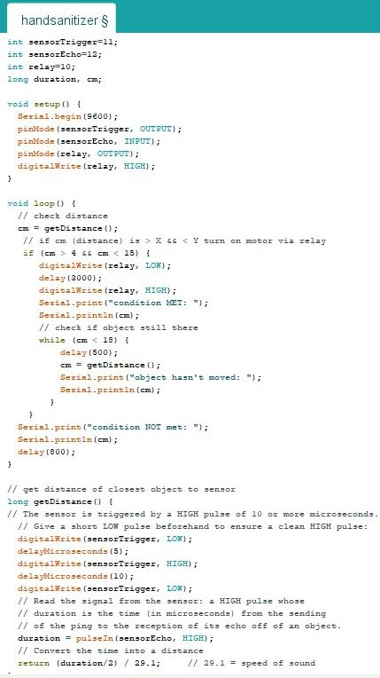
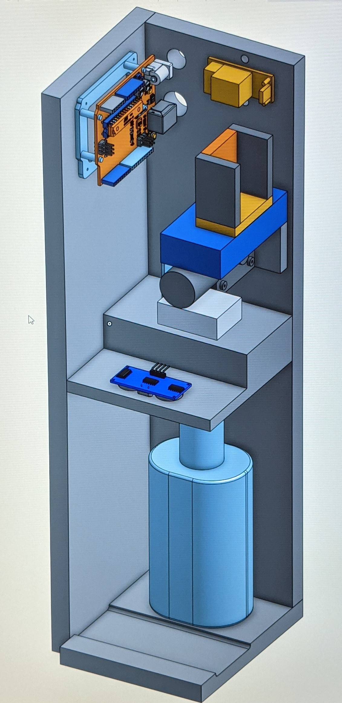
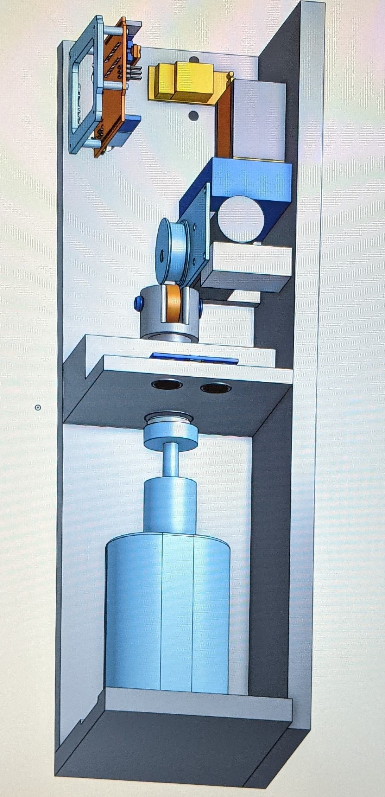
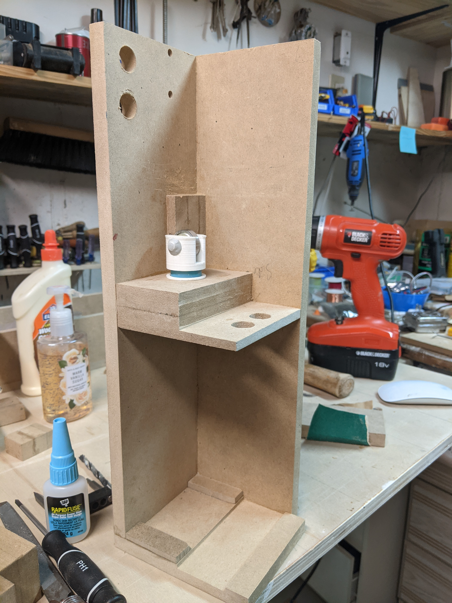
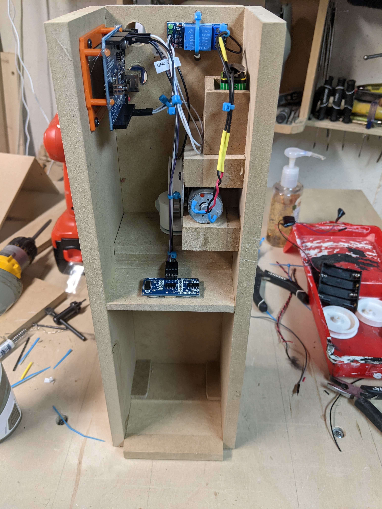

Automatic Hand Sanitizer Dispenser
Step 1: Test program logic
Ended up switching to a more powerful motor with a smaller cam attached to it powered by a 9V battery .
Step 2: Create models
 cam and piston design credit to Jeffrey Belbeck, P. Eng. Models created in Onshape.
Step 3: Create the frame and parts using model dimensions
All heavy machinery operated by the one and only Jeffy Belbeck.
Step 4: Put it all together & make it look pretty!
cam, select piston parts, drip tray and slide all printed on Jeffy's Creality Ender-3.